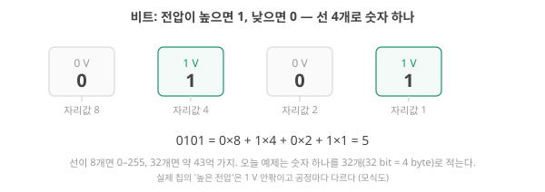
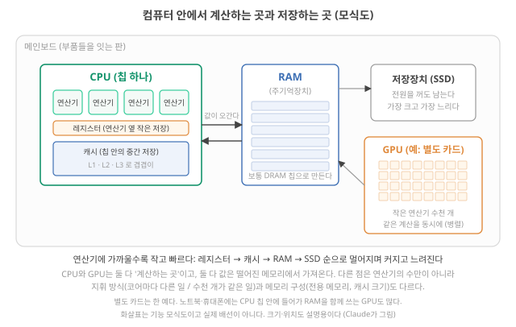
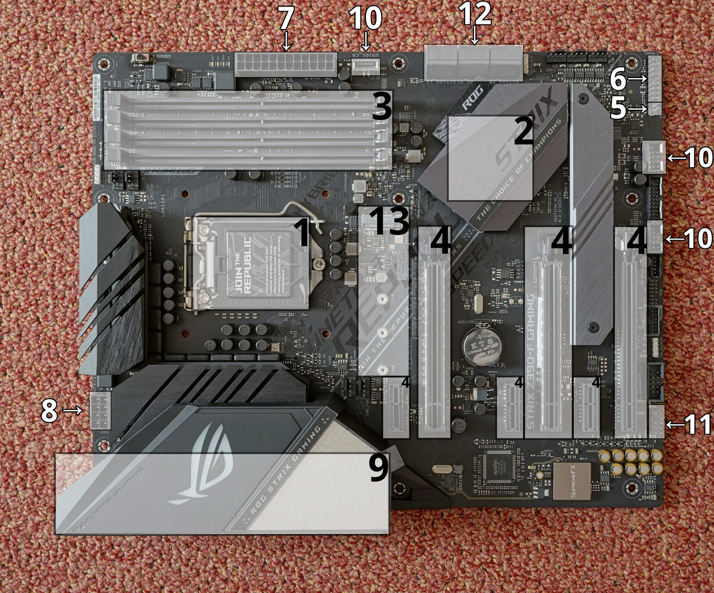
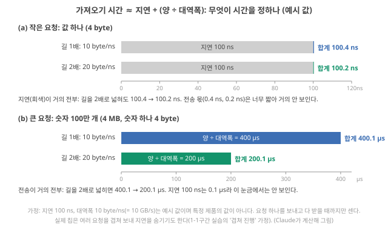
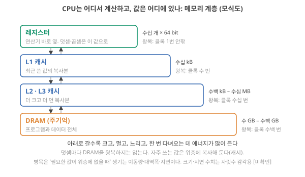
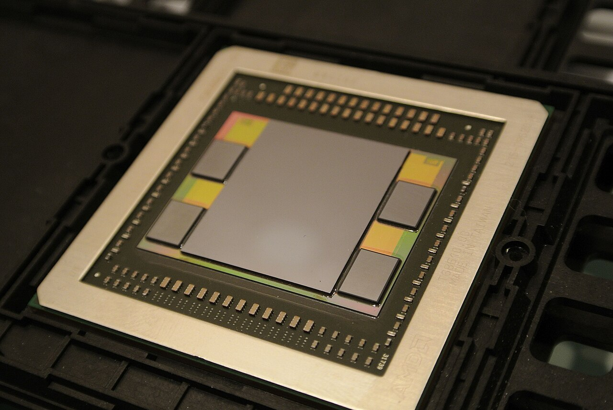
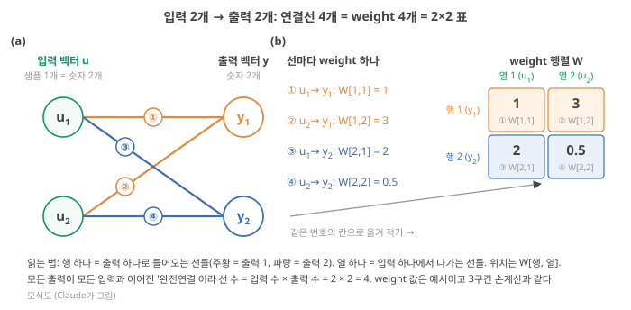
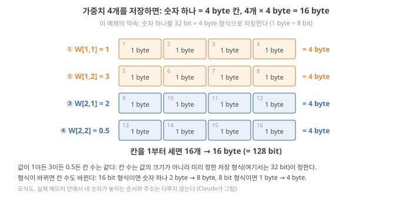
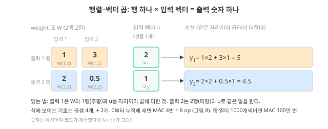
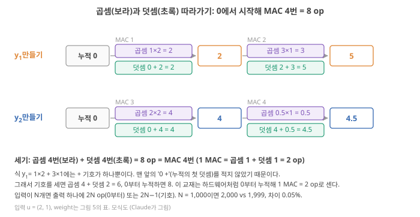

Day 3. 숫자·메모리·곱해서 더하기: 계산의 재료
Phase 1 · 왜 뉴로모픽 컴퓨팅인가
이번 질문 숫자는 어떻게 저장되고, 신경망 계산은 어떤 연산으로 이루어지나?
왜 배우나 crossbar weight 논문의 weight 수·byte·연산 수를 직접 셀 수 있다.
오늘의 장면 입력 vector(2개) → weight 4개 = 16 byte → MAC 4번 = 8 op → 출력 vector(2개)
오늘 반드시 저장 크기는 값이 아니라 형식(32 bit = 4 byte)이 정한다. 2×2 예에서 weight 4개·16 byte·8 op를 센다.
나중에 봐도 됨 트랜지스터·CMOS 복습 · SRAM·DRAM 셀 구조 · 메모리 층 숫자 · 영상
넘어가는 기준 '오늘 반드시'를 내 말로 말할 수 있으면 충분합니다.
이후 쓰이는 곳 Day 7–8 crossbar · Day 9 MCU + 작은 신경망 비교
지난 학습 복습
지난 학습 단위(Day 2 · 뉴로모픽의 줄기들, 기존 컴퓨팅과의 차이, 나의 위치)의 핵심을 다른 예로 확인합니다. 고르는 즉시 맞았는지와 이유가 보입니다. 틀려도 아래 학습자료는 그대로 열려 있고, 틀린 문제에는 다시 볼 곳이 붙습니다.
사전 테스트 (선택)
사전 테스트 펼치기 · 배우기 전에 짐작해 보는 문제 (선택)
학습자료
Day 1–2에서는 "뉴로모픽은 보통 컴퓨터와 다르게 계산한다"는 주장을 축으로 나눠 봤습니다. 오늘은 그 주장의 전제, 즉 보통 컴퓨터가 어디서 시간과 에너지를 잃는가를 숫자로 봅니다. 그런데 이 질문에 답하려면 먼저 보통 컴퓨터가 어떻게 생겼는지를 알아야 합니다. 그래서 오늘 자료의 앞 세 구간은 컴퓨터 자체를 처음부터 설명합니다. 컴퓨터를 아는 사람에게는 복습이고, 모르는 사람에게는 오늘의 본론으로 가는 계단입니다.
이번 주제에서 답할 질문 — 아래 학습 구간들이 차례로 답합니다.
- 계산하는 곳과 저장하는 곳이 떨어져 있으면 무슨 일이 생기나? (첫 실습에서 직접 바꿔 봅니다) 숫자는 무엇으로 적혀 몇 byte를 차지하고, 그 일을 하는 부품은 무엇인가? (바로 이어지는 '부품의 이름' 구간)
- 값은 어떤 길을 지나 연산기까지 오나?
- 신경망의 계산은 결국 무엇인가? 입력 2개 → 출력 2개 예제 하나로 weight 개수·저장량·연산량을 셉니다.
- 에너지는 어디로 가나? 계산 한 번과 값을 가져오는 한 번은 얼마나 다른가?
- 시간은 어디로 가나? 옮긴 1 byte당 계산을 얼마나 하나(연산 밀도), 여러 입력 벡터를 함께 처리하면(배치) 무엇이 바뀌나, '실시간 입력'은 어떤 연구 장면인가?
- 왜 그냥 더 빨리 돌리지 못하나?
- 이 모든 것을 "세 가지 벽"으로 묶으면, 뉴로모픽은 어디를 공격하고 무엇을 대가로 치르나?
1-1. 계산은 빨라도 기다릴 수 있다
상황. 내 device가 계산을 빨리 한다고 해서, 그 device를 쓴 시스템도 빨라질까요? 논문 서론은 "계산하는 곳과 저장하는 곳이 떨어져 있다"를 문제로 듭니다.
왜 지금? 오늘 나오는 모든 숫자(에너지, 시간, 병목)는 "계산 시간과 가져오기 시간 중 긴 쪽이 전체를 정한다"는 하나의 뼈대에서 나옵니다. 그 뼈대를 숫자를 직접 바꿔 보며 먼저 잡습니다.
어디에 쓰이나? 논문의 "연산이 빠르다", "device 에너지가 낮다"는 주장을 읽을 때, 전체 시간이 어디에 묶이는지 따져 볼 때 씁니다.
끝나면 할 수 있는 것. "계산하는 곳과 저장하는 곳이 떨어져 있으면, 연산기를 빠르게 해도 전체가 빨라지지 않을 수 있다"를 내가 바꿔 본 숫자로 설명합니다. 새로 쓰는 말은 연산기·메모리·전송 속도·재사용 넷뿐입니다.
이 구간은 짧은 기초 → 직접 바꿔 보기 → 무슨 일이 있었나 → 새 예제 순서로 갑니다.
짧은 기초: 두 가지 일, 두 곳
손 계산기에 3 + 5를 넣는 장면을 떠올려 보세요. 계산기는 두 가지 일을 합니다. 3과 5를 어딘가에 들고 있고(저장), 들고 있는 두 숫자로 새 숫자 8을 만듭니다(계산). 컴퓨터도 이 두 가지 일을 하는데, 보통의 컴퓨터는 두 일을 다른 곳에서 합니다.
- 연산기(arithmetic unit): 숫자를 받아 더하고 곱하는 회로. CPU·GPU라는 칩 안에 있습니다.
- 메모리: 숫자를 들고 있는 곳. 계산에 쓸 숫자 대부분은 연산기와 떨어진 메모리 칩(RAM)에 있습니다.
- 전송 속도(transfer rate): 그래서 계산하려면 숫자를 메모리에서 연산기로 옮겨야 합니다. 그 길로 1 ns(나노초, 10억분의 1초)에 옮길 수 있는 숫자 수에는 한계가 있습니다.
- 재사용(reuse): 한 번 가져온 숫자를 여러 계산에 다시 쓰면, 새로 가져올 숫자가 줄어듭니다.
부품의 실제 이름(CPU, 캐시, RAM)과 그 속의 원리는 다음 '부품의 이름' 구간에서 봅니다. 지금은 "연산기 — 길 — 메모리" 세 조각이면 충분합니다.
직접 바꿔 보기
곱해서 더하기 1,000번이라는 작은 일을 시킵니다(신경망 계산의 대부분이 곱해서 더하기입니다. 뒤의 '곱해서 더하기' 구간에서 손으로 해 봅니다). 아래에서 먼저 예상을 고른 뒤, 조절 막대를 하나씩 바꿔 보세요. 키보드로는 Tab으로 막대를 고르고 ←/→로 한 칸씩 움직입니다.
교육용 모형입니다. 실제 칩을 흉내 내는 시뮬레이터가 아니며, 숫자는 자릿수 감각을 위해 고른 가상의 값입니다. 단위: 시간은 ns(나노초), 전송 속도는 개/ns(1 ns에 옮기는 숫자 수).
모형의 가정과 입력 범위
- 할 일: 곱해서 더하기 1,000번. 재사용이 1이면 계산 한 번마다 메모리에서 숫자 1개가 새로 필요하다고 둡니다. (실제 곱해서 더하기에는 숫자 둘이 들어가지만, 비교를 단순하게 하려고 하나로 셉니다.)
- 계산 시간 = 1,000번 × (1 ns ÷ 연산기 속도 배수). 배수는 1×, 2×, 4×, 8×.
- 가져오기 시간 = 가져올 숫자 수 ÷ 전송 속도. 가져올 숫자 수 = 1,000 ÷ 재사용 횟수. 전송 속도는 0.25, 0.5, 1, 2, 4개/ns, 재사용은 1, 2, 4, 8번.
- 가져오기와 계산은 동시에 진행된다고 둡니다(다음 숫자를 가져오는 동안 앞 숫자를 계산). 그래서 전체 시간 = 둘 중 긴 쪽, 연산기가 기다린 시간 = 전체 − 계산 시간.
- 빠진 것: 첫 숫자가 도착할 때까지의 대기(지연. 뒤의 '값이 연산기까지 오는 길' 구간), 캐시 같은 중간 층, 겹침이 완벽하지 않은 경우, 에너지(뒤의 '에너지' 구간). 실제 칩은 이보다 복잡하지만, "긴 쪽이 전체를 정한다"는 뼈대는 뒤의 'memory wall' 구간의 모형과 같습니다.
정적 예제. 조작 화면이 뜨지 않을 때 같은 실험을 표로 읽습니다. 한 줄씩 내려가며 바뀐 칸을 보세요.
| 설정 (처음: 연산기 1×, 전송 0.25개/ns, 재사용 1) | 계산 시간 | 가져오기 시간 | 전체 시간 | 연산기가 기다린 시간 |
|---|---|---|---|---|
| 처음 설정 | 1,000 ns | 4,000 ns | 4,000 ns | 3,000 ns |
| 연산기만 2× | 500 ns | 4,000 ns | 4,000 ns | 3,500 ns |
| 연산기만 8× | 125 ns | 4,000 ns | 4,000 ns | 3,875 ns |
| 전송 속도만 1개/ns | 1,000 ns | 1,000 ns | 1,000 ns | 0 ns |
| 재사용만 4번 | 1,000 ns | 1,000 ns | 1,000 ns | 0 ns |
| 재사용 4번 + 연산기 2× | 500 ns | 1,000 ns | 1,000 ns | 500 ns |
| 재사용 8번 + 연산기 2× | 500 ns | 500 ns | 500 ns | 0 ns |
무슨 일이 있었나
관찰을 말로. 처음 설정에서 계산은 1,000 ns면 끝나지만, 숫자 1,000개를 1 ns에 0.25개씩 가져오는 데는 4,000 ns가 걸립니다. 연산기는 숫자가 도착해야 계산할 수 있으므로 전체 시간은 둘 중 긴 쪽인 4,000 ns이고, 연산기는 3,000 ns 동안 기다립니다. 여기서 연산기를 2배, 8배 빠르게 해도 줄어드는 것은 원래 짧던 계산 시간(1,000 → 500 → 125 ns)뿐이라, 전체는 4,000 ns 그대로입니다.
무엇이 전체를 줄였나. 긴 쪽을 줄인 조작만 전체를 줄였습니다. 길을 넓히거나(전송 속도 ↑), 가져올 숫자 자체를 줄이는 것(재사용 ↑)입니다. 재사용 4번이면 가져올 숫자가 250개, 가져오기 250 ÷ 0.25 = 1,000 ns로 계산 시간과 같아집니다. 이 지점을 넘어서야 연산기 속도가 다시 전체를 정합니다.
한 줄로 쓰면.
\[ T_{\text{전체}} \approx \max\!\left(\frac{N}{v},\ \frac{N/r}{s}\right) \]
- 기호: \(N\) = 계산 횟수(1,000번), \(v\) = 연산기가 1 ns에 하는 계산 수(속도 배수와 같은 값) [번/ns], \(r\) = 재사용 횟수, \(s\) = 전송 속도 [개/ns]. 두 항 모두 단위는 ns입니다. (뒤의 'memory wall' 구간에서 \(B\)라는 글자는 '배치'(batch: 여러 입력 벡터를 모아 한꺼번에 처리하는 것)라는 다른 뜻으로 쓰므로, 여기서는 전송 속도를 \(s\)로 적습니다.)
- 계산 순서: 왼쪽 항(계산 시간)과 오른쪽 항(가져오기 시간)을 따로 구하고 큰 쪽을 고릅니다.
- 처음 설정이면 \(\max(1000/1,\ 1000/0.25) = \max(1000,\ 4000) = 4000\) ns.
- 결과의 뜻: 큰 쪽을 줄여야 전체가 준다. 작은 쪽은 아무리 줄여도 전체가 그대로다.
- 가정: 가져오기와 계산이 완전히 겹친다(위 모형). 뒤의 'memory wall' 구간에서 이 식을 실제 단위(op/s, byte/s)로 다시 쓰고, 재사용은 '배치'와 '연산 밀도'(arithmetic intensity)라는 이름으로 다룹니다.
이름과 연구 연결. 옮기기가 전체 시간을 정하는 상태를 메모리 병목(memory-bound)이라고 부릅니다. 뒤의 'memory wall' 구간에서 이것이 왜 "memory wall"이라 불리는지 실제 칩 숫자로 봅니다. 뉴로모픽 device가 노리는 것이 바로 이 그림의 길입니다. 신경망의 weight(입력에 곱하는 숫자들. 신경망이 계산에 쓰는 숫자의 대부분이고, 뒤의 '곱해서 더하기' 구간에서 직접 계산합니다)를 떨어진 메모리에 두지 않고 저장된 자리에서 곱해 더하면, weight를 가져오는 막대가 크게 줄어듭니다. 그 대표가 crossbar(가로·세로 전선이 교차하는 점마다 device를 하나씩 두고, device에 저장된 값으로 그 자리에서 곱해 더하는 격자. Day 2 (다)와 뒤의 '곱해서 더하기' 구간)입니다. 대신 무엇을 대가로 치르는지(정밀도, 쓰기 비용)는 마지막 '세 가지 벽' 구간에서 봅니다. 해석
새 예제로 확인
같은 원리를 다른 숫자에 써 봅니다. 처음 고른 답이 기록되고, 힌트를 본 뒤 고른 답은 따로 표시됩니다(이 브라우저에만 저장).
- 다른 컴퓨터: 연산기는 계산 1번에 2 ns, 길은 1 ns에 숫자 1개, 계산 600번, 재사용 1. 이때 길을 2배로 넓히면 전체 시간은?
답과 이유
그대로 1,200 ns. 계산 600 × 2 = 1,200 ns, 가져오기 600 ÷ 1 = 600 ns라 원래 계산이 긴 쪽입니다. 길을 넓혀 가져오기가 300 ns가 되어도 전체는 계산 시간에 묶여 있습니다. - 처음 설정(연산기 1×, 길 0.25개/ns)에서 연산기를 놀리지 않으려면 숫자 하나를 최소 몇 번 다시 써야 할까요?
답과 이유
4번. 가져올 숫자 250개, 가져오기 250 ÷ 0.25 = 1,000 ns로 계산 시간과 같아집니다. 2번이면 2,000 ns로 아직 깁니다.
- 연산기 / 메모리
- 숫자로 새 숫자를 만드는 회로 / 숫자를 들고 있는 곳. 보통 컴퓨터에서는 서로 떨어져 있다.
- 전송 속도
- 메모리에서 연산기로 단위 시간에 옮기는 양. 뒤의 '값이 연산기까지 오는 길' 구간에서 '대역폭'이라는 정식 이름을 붙인다.
- 재사용
- 한 번 가져온 숫자를 여러 계산에 다시 쓰는 것. 뒤의 'memory wall' 구간의 '배치'·'연산 밀도'로 이어진다.
- 메모리 병목
- 가져오기 시간이 계산 시간보다 길어 전체 시간을 정하는 상태.
- 보통 컴퓨터는 계산(연산기)과 저장(메모리)을 다른 곳에서 하고, 그 사이 길로 숫자를 옮긴다.
- 가져오기와 계산이 겹쳐 진행되면 전체 시간 ≈ 둘 중 긴 쪽. 긴 쪽을 줄여야 전체가 준다.
- 가져오기가 긴 쪽이면 연산기를 빠르게 해도 기다림만 늘어난다. 길을 넓히거나 재사용을 늘려야 한다.
- 뉴로모픽 device는 '길' 자체를 줄이려는 시도다. 그 대가는 마지막 '세 가지 벽' 구간에서 본다.
- 남은 질문: 연산기와 메모리의 실제 이름과 원리는? → 다음 '부품의 이름' 구간.
1-2. 부품의 이름: 비트, 트랜지스터, CPU·GPU, 메모리 층
상황. 논문이 "RAM에서 연산기로 weight를 옮긴다", "on-chip 캐시", "GPU" 같은 말을 이름만으로 씁니다. 내 device가 대신하겠다는 것이 정확히 어느 부품 사이의 이동인지 알아야 합니다.
왜 지금? 앞의 실습은 "연산기 — 길 — 메모리" 세 조각만 썼습니다. 그 조각의 실제 이름과 크기를 채워야 뒤의 byte·에너지 계산을 할 수 있습니다.
어디에 쓰이나? 논문의 weight 개수·byte 수를 직접 세 볼 때, "on-chip memory" 같은 말의 뜻을 읽을 때 씁니다.
끝나면 할 수 있는 것. "컴퓨터 안에서 숫자는 무엇으로 되어 있고, 어디에 놓여 있고, 누가 계산하는가"를 CPU·GPU·RAM이라는 이름과 함께 말합니다.
앞의 실습에서는 "연산기 — 길 — 메모리" 세 조각만 썼습니다. 이 구간은 그 조각들의 실제 이름과 원리를 채웁니다. 숫자가 무엇으로 적히는지(비트), 그 숫자를 들고 있고 새로 만드는 부품이 무엇인지(트랜지스터), 계산하는 칩(CPU·GPU)과 저장하는 층(레지스터·캐시·RAM·저장장치)의 순서입니다. 비트·트랜지스터·CMOS는 Day 1–2에서 그림과 단계로 처음 설명했으므로 여기서는 오늘 필요한 만큼 되짚고 링크를 겁니다. 새로 자세히 보는 것은 메모리 층과 '왜 층을 나누는가'입니다.
숫자는 전압으로 적혀 있다 — 비트와 바이트
이 기초는 오늘 뒤에 나오는 모든 크기(저장량, 이동량, 연산 밀도)의 단위가 되므로 접지 않고 펼쳐 둡니다. 처음 설명은 Day 1 기초: 비트에 있습니다.
비트. 컴퓨터 안의 전선 하나는 두 상태 중 하나입니다. 전압이 높거나(약 1 V 안팎), 낮거나(0 V 근처). 이 두 상태에 1과 0이라는 이름을 붙이고, 전선 하나가 담는 이 최소 정보를 비트(bit)라고 부릅니다.
비트 여러 개로 숫자 하나. 전선 하나로는 0과 1, 두 가지밖에 못 적으니 전선을 여러 개 묶습니다. 전선 4개의 상태가 0, 1, 0, 1이면 자리값 8, 4, 2, 1을 곱해 더해 0×8 + 1×4 + 0×2 + 1×1 = 5, 즉 "0101"은 숫자 5입니다(그림 1). 비트가 하나 늘 때마다 적을 수 있는 경우의 수가 2배가 되므로, 8개면 2⁸ = 256가지(0–255), 32개면 2³² ≈ 43억 가지를 구별합니다.

디지털과 아날로그. 값이 띄엄띄엄(0 아니면 1)인 이 방식을 디지털이라고 합니다. 반대로 전압 0.37 V, 0.38 V처럼 연속적인 값 자체를 정보로 쓰는 방식이 아날로그입니다. "컴퓨터 안의 모든 값은 0과 1이다"라는 말이 이 뜻입니다. 디지털의 장점은 잡음에 강하다는 것입니다. 1 V가 0.9 V로 흔들려도 여전히 "1"로 읽히니까요. 아날로그는 그 0.1 V 차이가 곧 정보의 오차입니다. 이 차이는 뉴로모픽 논의 내내 따라다닙니다(Day 1–2에서 본 '정밀도' 축).
바이트: 비트 8개 묶음. 비트 8개를 한 묶음으로 바이트(byte)라고 부릅니다. 8이라는 수는 물리 법칙이 아니라 약속입니다. 글자 하나를 8 bit에 담던 관행이 1960년대에 표준으로 굳었다고 알려져 있고 미확인 역사 서술은 원문 대조 안 함, 지금은 메모리가 1 byte마다 번호(주소. 뒤의 '값이 연산기까지 오는 길' 구간)를 붙여 관리하므로 저장 공간의 크기를 byte로 셉니다. 단위 기호로 bit는 소문자 b, byte는 대문자 B로 쓰기도 하지만, 뒤의 'memory wall' 구간에서 B가 '배치'라는 다른 뜻으로 쓰이므로 이 교재는 단위를 'bit', 'byte'로 풀어 씁니다.
값의 크기와 저장 칸의 크기는 다르다. 숫자 1이라고 1 byte, 숫자 1000이라고 1000 byte가 드는 것이 아닙니다. 저장 칸의 크기는 숫자를 적기 전에 정한 형식(format: 숫자 하나에 비트를 몇 개 쓸지의 약속)이 정합니다. 네 자리짜리 숫자 표시판을 떠올리면 됩니다. 1은 "0001", 1000은 "1000"으로 적혀 둘 다 같은 네 칸을 씁니다. 다만 형식마다 담을 수 있는 범위가 있어서, 8 bit(1 byte) 정수 형식은 0–255까지만 적을 수 있고 1000은 넣을 수 없습니다. 1000을 정수로 적으려면 16 bit(2 byte, 0–65,535) 이상의 형식이 필요합니다. 자주 쓰는 형식은 이 정도입니다.
| 형식 | 숫자 하나의 저장 크기 | 담을 수 있는 것 (예) |
|---|---|---|
| 8 bit | 1 byte | 정수 0–255 (또는 −128–127) |
| 16 bit | 2 byte | 정수 0–65,535, 또는 낮은 정밀도의 소수 |
| 32 bit | 4 byte | 정수 약 ±21억, 또는 3.7 같은 소수 |
| 64 bit | 8 byte | 더 넓은 범위, 더 많은 유효 숫자 |
3.7 같은 소수(실수)는 부호·유효 숫자·자릿수를 정해진 칸에 나눠 적는 부동소수점(floating point) 형식으로 저장합니다. 그 내부 구조는 오늘 필요하지 않고, 필요한 것은 "32 bit 부동소수점 숫자 하나 = 4 byte"라는 크기뿐입니다. 소수점 없는 수는 정수(integer) 형식으로 적습니다.
오늘 예제의 약속. 오늘 자료는 계산을 단순하게 하려고 숫자 하나(weight·입력·출력 모두)를 32 bit = 4 byte 형식으로 저장한다고 둡니다. 모든 숫자가 늘 4 byte인 것은 아닙니다. 실제 신경망은 16 bit(2 byte)나 8 bit(1 byte)로도 저장하며, 그렇게 하면 같은 개수의 숫자가 차지하는 칸이 절반, 4분의 1로 줍니다(뒤의 '낮은 정밀도' 설명).
크기 단위. 이 교재는 십진 단위를 씁니다. 1 kB = 1,000 byte, 1 MB = 1,000,000 byte(10⁶), 1 GB = 10⁹ byte. 컴퓨터 쪽에는 2의 거듭제곱 단위도 있어서 1 KiB = 1,024 byte, 1 MiB = 1,048,576 byte(2²⁰)이고, 운영체제나 메모리 제품 표기가 이쪽을 쓰기도 합니다. 예를 들어 4,000,000 byte는 4 MB이고 약 3.81 MiB입니다. 오늘 숫자는 모두 MB(10⁶ byte) 기준이며, 캐시 크기처럼 원래 2의 거듭제곱인 값(예: 32 kB)은 자릿수만 보면 되므로 따로 구별하지 않습니다.
값을 들고 있는 회로도, 새 값을 만드는 회로도 트랜지스터로 만든다 — 트랜지스터와 CMOS
한 줄 복습. 트랜지스터(n채널 MOSFET)는 게이트 단자에 건 전압(\(V_{GS}\), 소스를 기준으로 잰 게이트 전압)으로 소스와 드레인 사이의 전류를 켜고 끄는 부품입니다. 디지털 회로는 그중 '켜짐'(게이트가 문턱전압보다 충분히 높음)과 '꺼짐'(0 V 근처) 두 상태만 써서 트랜지스터를 스위치로 씁니다. 한 회로의 출력 전압을 다음 트랜지스터의 게이트에 이을 수 있어서, 이렇게 이은 수십억 개가 칩 하나입니다. 단면 그림과 "게이트 전압을 올리면 무엇이 변하나"는 Day 1의 '트랜지스터' 기초 계단, 스위치로 쓰는 법은 Day 1의 '스위치로 쓰기' 기초 계단에 있습니다.
Day 1–2에서 본 세 가지 쓰임을 오늘 필요한 만큼 다시 적습니다.
- 저장(DRAM 한 칸): 값을 실제로 들고 있는 것은 스위치가 아니라 capacitor(두 도체 판 사이에 절연체를 끼워 전하를 담는 부품, \(Q = CV\))입니다. 트랜지스터 1개는 그 capacitor를 값이 드나드는 선(비트선, bit line)에 잇거나 끊는 문 역할을 합니다. capacitor 전압이 기준보다 높으면 1, 낮으면 0으로 읽습니다. 꺼진 스위치로도 전하가 조금씩 새므로 수십 ms마다 읽어서 다시 써 넣어야 하고(새로 고침, refresh), 전원을 끄면 사라집니다. 쓰기·유지·읽기 순서 그림은 Day 1의 'capacitor와 DRAM' 기초 계단.
- 논리: 스위치 몇 개를 이어 "두 입력이 모두 1일 때만 출력이 0"(NAND) 같은 규칙 회로를 만듭니다. 이런 회로를 논리 게이트(logic gate)라 하며, 트랜지스터의 '게이트 단자'와는 다른 말입니다(Day 1의 '논리 게이트' 기초 계단).
- 계산: 논리 게이트 XOR와 AND를 나란히 두면 1비트 덧셈 회로(반가산기, half adder)가 되고, 이것을 이어 32 bit 덧셈기, 더 복잡하게 이으면 곱셈기가 됩니다(Day 1–2의 '1비트 덧셈' 절). 컴퓨터의 "계산"은 결국 전압 패턴을 받아 다른 전압 패턴을 내는 스위치 회로입니다.
CMOS 한 줄 복습. 트랜지스터에는 nMOS(채널에 전자가 흐름. 소스를 GND(0 V)에 두고, 게이트가 소스보다 문턱 이상 높으면 켜짐)와 pMOS(채널에 정공이 흐름. 소스를 전원 전압 \(V_{DD}\)에 두고, 게이트가 소스보다 문턱 이상 낮으면 켜짐)가 있습니다. 둘을 같은 입력에 물려 한쪽이 켜지면 다른 쪽이 꺼지게 짝지은 회로 방식이 CMOS(complementary MOS, 상보형 MOS)입니다(Day 1의 CMOS 기초 계단). 정지 상태에서는 \(V_{DD}\)와 GND 사이에 켜진 길이 없어 이상적으로는 전류가 흐르지 않고, 에너지는 주로 출력이 0↔︎1로 바뀔 때 다음 단의 capacitance를 충방전하면서 듭니다. 다만 실제로는 꺼진 device로 새는 작은 전류(문턱 아래 leak, 게이트 leak)가 늘 흐르고, 입력이 바뀌는 짧은 동안 두 device가 함께 켜져 흐르는 단락 전류(short-circuit current)도 있습니다. 거의 모든 디지털 칩이 CMOS로 만들어지고, Day 1–2의 (나) 디지털 SNN 칩 설명에서 "device는 평범한 CMOS 그대로"라고 한 말이 이 뜻입니다. 이 leak은 뒤의 'Dennard scaling' 구간에서 "왜 더 빨리 못 돌리나"의 열쇠로 다시 만납니다.
계산하는 부품: CPU와 GPU
위의 덧셈·곱셈 회로들을 모아 놓은 것이 연산기입니다. 연산기만 있으면 계산이 안 됩니다. "지금 어떤 계산을 어떤 순서로 할지"를 정해 주는 지휘자(제어 회로)와, 계산 직전의 숫자를 잠깐 들고 있을 아주 작은 저장소가 함께 있어야 합니다. 이 셋(연산기 + 제어 + 작은 저장소)을 칩 하나에 담은 것이 CPU(central processing unit, 중앙처리장치)입니다. 요즘 CPU는 이 묶음(코어, core)을 4–16개쯤 넣습니다.
GPU(graphics processing unit)는 원래 화면의 점(픽셀) 수백만 개의 색을 동시에 계산하려고 만든 칩입니다. 픽셀마다 하는 계산이 똑같으므로, 강한 연산기 몇 개 대신 단순한 연산기를 수천 개 넣고 같은 계산을 한꺼번에 시킵니다. 이렇게 여러 연산기가 동시에 일하는 것을 병렬(parallel) 처리라고 합니다. 신경망 계산도 "같은 계산을 숫자만 바꿔 수백만 번"이라서 GPU에 잘 맞았고, 그래서 딥러닝의 주력이 되었습니다.
"GPU는 병렬처리를 해 주는 CPU인가?"라는 직관은 반은 맞습니다. 둘 다 디지털 연산기 묶음이고, 둘 다 값을 떨어진 메모리에 둡니다(바로 아래). 다른 점은 연산기의 수와 종류, 지휘 방식(CPU는 코어마다 다른 일을, GPU는 수천 개가 같은 일을), 그리고 메모리 구성입니다. 별도 카드형 GPU는 넓은 길을 깐 전용 메모리를 따로 두는 경우가 많고(뒤의 '값이 연산기까지 오는 길' 구간의 HBM), 노트북·휴대폰처럼 GPU가 CPU 칩 안에 들어가 RAM을 함께 쓰는 경우도 많습니다. 해석 Day 1–2에서 "GPU는 병렬성을 공유할 뿐, 저장·계산 위치 같은 다섯 축은 그대로"라고 한 말이 이제 읽힐 것입니다.
저장하는 부품: 레지스터, 캐시, RAM(DRAM), 저장장치
저장소는 한 종류가 아니라 네 층입니다. 연산기에서 가까운 순서로 적습니다.
- 레지스터(register): 연산기 바로 옆, CPU 안에 있는 아주 작은 저장소. 덧셈을 하려면 두 숫자가 여기 있어야 합니다. 수십 개뿐이라 큰 데이터는 못 둡니다.
- 캐시(cache): CPU 칩 안에 있는 중간 저장소. 최근에 쓴 값과 곧 쓸 값의 복사본을 둡니다. 한 층이 아니라 L1·L2·L3로 겹겹이 있고, 바깥 층일수록 크고 느립니다(수십 kB–수십 MB). 캐시는 capacitor 대신 트랜지스터 6개로 비트 하나를 붙잡는 SRAM(static RAM)으로 만듭니다. 6개 중 4개는 Day 1의 CMOS 인버터(입력을 뒤집어 내보내는 회로) 두 개이고, 서로의 출력을 상대의 입력에 물려 고리를 이룹니다. 한쪽 출력이 1이면 다른 쪽은 그 1을 받아 0을 내고, 그 0이 다시 첫째 인버터에 들어가 1을 유지시키므로, 전원이 있는 한 값이 스스로 붙잡힙니다(되먹임). 나머지 2개는 이 고리를 비트선에 잇는 문입니다. Harris E158 강의 13, 슬라이드 6 새로 고침이 필요 없고 빠르지만, 비트 하나에 트랜지스터 6개가 들어 DRAM(트랜지스터 1 + capacitor 1)보다 한 칸이 크고, 그래서 같은 면적에 담는 양이 적습니다.
- RAM(random access memory, 주기억장치): CPU 밖, 메인보드에 꽂힌 막대 모양 부품. 지금 돌아가는 프로그램과 데이터 전체가 여기 있습니다(수 GB 이상). "RAM"은 역할의 이름이고, 그것을 만드는 방식의 이름이 DRAM(dynamic RAM, 위의 '스위치 1개 + 그릇 1개' 방식)입니다. 요즘 주기억장치는 거의 다 DRAM이라, 이 교재에서 RAM과 DRAM은 같은 부품을 가리킵니다. 전원을 끄면 내용이 사라집니다.
- 저장장치(SSD, 하드디스크): 전원을 꺼도 남는 곳. 파일이 여기 있습니다. 가장 크고 가장 느립니다. 프로그램을 실행하면 저장장치에서 RAM으로 먼저 옮깁니다.


왜 네 층이나 두는가? 한 종류로 "크고, 빠르고, 싼" 저장소를 만들 수 없기 때문입니다. 이유를 셋으로 나눠 봅니다. 해석 교과서 일반 지식의 요약
- 한 칸의 크기. SRAM 한 칸은 트랜지스터 6개, DRAM 한 칸은 트랜지스터 1개 + capacitor 1개입니다. 같은 면적에 DRAM이 훨씬 많은 비트를 담으므로 비트당 값이 쌉니다. 대신 DRAM은 새로 고침이 필요하고 읽기가 느립니다(3번).
- 칸이 많을수록 선이 길다. 메모리는 칸들을 가로·세로 격자로 깔고, 칸을 고르는 선(워드선, word line)과 값이 드나드는 선(비트선)을 줄마다 지나가게 합니다. 칸이 많을수록 이 선이 길어지는데, 긴 금속선은 그 자체로 큰 capacitor라서(뒤의 '에너지' 구간) 전압을 바꾸는 데 시간과 에너지가 더 듭니다. 원하는 칸을 고르는 회로(주소 해독, address decoding)도 더 커집니다.
- 읽는 방식과 거리. DRAM은 작은 셀 capacitor와 큰 비트선이 전하를 나눠 생기는 작은 전압 차(Day 1–2 예에서 0.05 V)를 증폭기로 판정한 뒤 다시 써 넣어야 해서 SRAM보다 느립니다(Day 1의 DRAM 읽기 단계). 또 RAM은 보통 CPU와 다른 칩으로 따로 만들어지므로, 값이 칩 밖 보드 배선을 cm 단위로 지나야 합니다(위 사진).
그래서 "자주 쓰는 것은 작고 빠른 층에 가까이, 나머지는 크고 싼 층에 멀리"라는 타협을 하는데, 이 타협이 오늘의 주인공인 병목을 낳습니다.
이제 Day 1–2의 문장 "저장하는 곳과 계산하는 곳이 떨어져 있다"를 정확히 들을 수 있습니다. 계산은 CPU(또는 GPU) 안의 연산기가 레지스터의 값으로 하고, 데이터 전체는 칩 밖의 RAM에 있습니다. 뉴로모픽의 "저장과 계산을 같은 곳에"라는 말은 이 그림에서 RAM과 연산기 사이의 거리를 없애거나 줄이자는 뜻입니다. 이온 device가 그 자리에 들어가려면, 값을 들고 있는 일(저장)과 새 값을 만드는 일(계산)을 한 device가 해야 합니다. Day 1–2의 (다) 줄기 crossbar(가로·세로 전선이 교차하는 점마다 device를 하나씩 둔 격자로, device에 저장된 값으로 그 자리에서 곱해 더합니다. 뒤의 '곱해서 더하기' 구간에서 다시 봅니다)가 그 예였습니다.
추가 연습 (선택) · 바이트 계산과 부품 확인 3문항
숫자 하나를 32 bit = 4 byte 형식으로 적을 때, 숫자 100만 개는 몇 바이트일까요? 그리고 그것은 위 네 층 중 어디에 들어갈까요? (뒤의 '곱해서 더하기' 구간에서 볼 1,000×1,000 weight 표 하나가 이 크기입니다.) 계산한 뒤 아래 점검으로 확인하세요.
- 비트 / 바이트
- 전선 하나의 0·1이 비트, 비트 8개가 바이트. 숫자 하나의 저장 크기는 값이 아니라 형식이 정한다(8 bit = 1 byte, 32 bit = 4 byte). 오늘 예제는 숫자 하나 = 4 byte.
- 디지털 / 아날로그
- 값이 띄엄띄엄(0·1)인가, 연속 값 자체가 정보인가. 디지털은 잡음에 강하고 아날로그는 잡음이 곧 오차.
- 트랜지스터
- 게이트 전압으로 소스–드레인 사이 전류를 켜고 끄는 부품. 디지털에서는 스위치로 쓴다. 저장(DRAM: capacitor 앞의 문, SRAM: 인버터 두 개의 고리)과 계산(논리 게이트) 모두의 부품.
- CMOS
- nMOS·pMOS를 같은 입력에 물려 한쪽이 켜지면 다른 쪽이 꺼지게 짝지은 회로 방식. 정지 상태에서는 VDD–GND 사이에 켜진 길이 없어 이상적으로는 전류가 0이고, 실제로는 작은 leak이 흐른다. 거의 모든 디지털 칩.
- CPU / GPU
- 연산기+제어+레지스터 묶음(코어) 몇 개 vs 단순 연산기 수천 개. 지휘 방식과 메모리 구성도 다르다. 둘 다 값은 떨어진 메모리에 둔다.
- 레지스터 / 캐시 / RAM(DRAM) / 저장장치
- 연산기에서 가까운 순. 가까울수록 작고 빠르다. RAM은 역할 이름, DRAM은 만드는 방식 이름.
- 저장 = 전압(비트)을 들고 있기, 계산 = 들고 있는 전압으로 새 전압 만들기. 둘 다 트랜지스터로 만든 회로가 한다(DRAM은 capacitor + 스위치 1개, SRAM은 트랜지스터 6개의 되먹임 고리, 계산은 논리 게이트).
- 숫자 하나의 저장 크기는 값이 아니라 형식이 정한다(8 bit = 1 byte, 32 bit = 4 byte). 오늘 예제의 약속은 숫자 하나 = 4 byte, 단위는 1 MB = 10⁶ byte.
- 계산하는 곳은 CPU·GPU 안의 연산기(GPU는 단순 연산기 수천 개가 같은 계산을 동시에), 데이터 전체는 칩 밖 RAM(DRAM)에. 사이에 레지스터·캐시가 있다.
- 층을 나누는 이유: 한 칸의 크기(SRAM 6개 vs DRAM 1+1), 칸이 많을수록 긴 선, DRAM의 느린 읽기와 칩 밖 거리 때문에 크고 빠르고 싼 저장소를 한 번에 못 만든다 해석.
- 남은 질문: 값은 RAM에서 연산기까지 어떻게 오고, 그 길에서 무엇이 느린가? → 다음 '값이 오는 길' 구간.
2. 값이 연산기까지 오는 길
상황. CPU가 "3 + 5"를 계산하려는데 3과 5가 DRAM에 있습니다. 값이 연산기 옆의 레지스터에 오기까지 어떤 길을 지나고, 그 길은 왜 느릴까요?
왜 지금? "멀다 = 느리고 비싸다"는 말이 논문마다 나옵니다. 지연과 대역폭이라는 두 단어로 구별해야, 뒤에서 memory wall을 정확히 말할 수 있습니다.
어디에 쓰이나? "memory wall", "bandwidth-limited" 문장을 읽을 때, 내 device가 줄이려는 것이 지연인지 대역폭인지 구별할 때 씁니다.
끝나면 할 수 있는 것. "3 + 5"가 컴퓨터 안에서 어떤 순서로 처리되는지, 그리고 '멀다'가 왜 '느리고 비싸다'인지를 지연·대역폭이라는 두 단어로 말합니다.
비유 하나. 요리사(연산기)가 있고, 재료는 세 곳에 있습니다. 손 닿는 도마 위(레지스터), 뒤쪽 냉장고(캐시), 길 건너 창고(RAM). 요리사는 도마 위 재료로만 칼질을 합니다. 재료가 도마에 없으면 냉장고에서, 냉장고에도 없으면 창고에서 가져옵니다. 창고를 한 번 다녀오는 시간에 도마 위에서는 칼질을 수백 번 할 수 있습니다. 좋은 요리사는 다음에 쓸 재료를 미리 냉장고에 옮겨 두고, 한 번 꺼낸 재료를 여러 요리에 돌려 씁니다.
이 비유가 맞는 부분: 가까울수록 빠르고, 가져온 재료를 돌려 쓰면 왕복이 준다. 비유가 깨지는 부분: 컴퓨터의 캐시는 요리사가 아니라 회로가 자동으로 채우고, "창고에서 가져오기"는 원본을 옮기는 것이 아니라 복사본을 만드는 것입니다. 창고의 값은 그대로 남습니다.
실제 순서를 숫자 하나로 따라가 봅시다. 아래에서 시간은 클록(clock) 수로 셉니다. 클록은 칩 안을 지나는 박자 신호(높은 전압과 낮은 전압이 일정한 간격으로 번갈아 오는 사각파)이고, 레지스터는 박자마다 새 값을 붙잡습니다. 3 GHz CPU라면 1초에 박자가 30억 번, 한 박자는 약 0.33 ns입니다. 처음 설명은 Day 1 기초: 클록에 있고, 뒤의 'Dennard scaling' 구간에서 다시 씁니다.
단계 1 — 요청. RAM의 칸에는 0번부터 차례로 일련번호가 붙어 있고, 이 번호를 주소(address), 흔히 '번지'라고 부릅니다. 프로그램은 값을 이 번호로 가리킵니다. 프로그램이 "RAM의 1,000번지에 있는 수와 1,001번지에 있는 수를 더해 1,002번지에 넣어라"라고 시킵니다. 연산기는 레지스터의 값으로만 계산할 수 있으므로, 먼저 두 수를 레지스터로 가져와야 합니다.
단계 2 — 캐시 확인. CPU는 RAM에 가기 전에 캐시를 먼저 봅니다. 캐시는 값의 복사본과 함께 그 값이 원래 몇 번지에서 왔는지(꼬리표, tag)를 같이 적어 두므로, 찾는 번지를 꼬리표와 비교해 복사본이 있는지 압니다 미확인 교과서 일반 지식, 원문 대조 안 함. 1,000번지의 복사본이 캐시에 있으면(hit) 몇 클록 만에 레지스터로 옵니다. 없으면(miss) RAM까지 갑니다.
단계 3 — RAM 왕복. miss라면 CPU 밖으로 신호가 나가 RAM의 해당 칸(DRAM 셀의 capacitor)을 읽고(Day 1의 DRAM 읽기), 값 3이 돌아옵니다. 이 왕복은 캐시보다 자릿수로, 즉 10배·100배 단위로 오래 걸립니다(L1 캐시 몇 클록 vs RAM 수백 클록) [미확인: 수치]. 돌아온 값은 레지스터에 들어가고, 복사본이 캐시에도 남습니다. 1,001번지의 5도 같은 과정을 거칩니다.
단계 4 — 계산. 레지스터에 3과 5가 모이면 덧셈 회로가 한 클록 안팎에 8을 만들어 다른 레지스터에 둡니다. 계산 자체는 이 한 걸음뿐입니다.
단계 5 — 결과 저장. 8을 1,002번지에 넣으라고 했으니 캐시(그리고 나중에 RAM)에 씁니다. 만약 다음 계산이 8을 또 쓴다면 레지스터나 캐시에서 바로 가져오므로 RAM에 갈 일이 없습니다.
정리. 다섯 단계 중 계산은 한 단계이고, 나머지는 전부 옮기는 일입니다. 그리고 옮기는 일의 비용은 "어디까지 가야 하느냐"로 정해집니다. 캐시가 잘 맞으면 싸고, 매번 RAM까지 가면 비쌉니다.
'느리다'의 두 가지 뜻. 창고가 멀다는 말에는 서로 다른 두 양이 숨어 있습니다. 하나는 한 번 요청해서 받을 때까지의 시간입니다. 고속도로 톨게이트 대기 같은 것으로, 지연(latency)이라 하고 단위는 초(또는 클록 수)입니다. 다른 하나는 1초에 옮길 수 있는 양입니다. 차선 수 같은 것으로, 대역폭(bandwidth)이라 하고 단위는 byte/s입니다. 차선이 많으면 한꺼번에 많이 옮기지만, 톨게이트 대기 시간은 그대로입니다. 이 둘을 구별해야 뒤의 'memory wall' 구간의 "벽"이 무엇인지 말할 수 있습니다.
둘은 어떻게 합쳐지나. 요청 하나를 보내고 다 받을 때까지의 시간은 대략 "첫 값이 도착할 때까지(지연) + 나머지가 길을 통해 흘러들어오는 시간(양 ÷ 대역폭)"입니다. 예시 값으로 지연 100 ns, 대역폭 10 byte/ns(= 10 GB/s)인 메모리를 놓고 두 요청을 비교합니다(그림 3).
- 값 하나(4 byte): 100 + 4 ÷ 10 = 100.4 ns. 거의 전부가 지연입니다. 길을 두 배(20 byte/ns)로 넓혀도 100.2 ns로 그대로입니다.
- 숫자 100만 개(4 MB. 앞 구간 연습 문제의 크기이고, 뒤의 '곱해서 더하기' 구간에서 볼 1,000×1,000 weight 표 하나가 이 크기): 100 + 4,000,000 ÷ 10 = 400,100 ns ≈ 0.4 ms. 거의 전부가 전송 시간이라, 길을 두 배로 넓히면 약 0.2 ms로 절반이 됩니다.
즉 작은 값을 띄엄띄엄 가져오면 지연이, 큰 데이터를 통째로 가져오면 대역폭이 시간을 정합니다. 신경망의 weight처럼 큰 데이터를 계속 가져오는 계산은 뒤쪽이고, 그래서 뒤의 'memory wall' 구간의 시간 식에는 대역폭이 들어갑니다. (실제 칩은 여러 요청을 겹쳐 보내 지연을 숨기기도 합니다. 첫 실습의 '겹쳐 진행' 가정이 그것입니다.)

여기에 용량(capacity)(얼마나 담나, byte)을 더해 세 양이 층마다 자릿수로 다릅니다.
- 용량 [byte]: 레지스터 수십 개 × 64 bit, L1 캐시 수십 kB, L2·L3 수백 kB–수십 MB, RAM 수 GB 이상 미확인
- 지연 [클록 수]: 레지스터 1 안팎, L1 몇, RAM 수백 미확인
- 대역폭 [byte/s]: 멀수록 낮은 것이 보통. 단, GPU의 메모리(HBM: 칩 바로 옆에 메모리 칩을 여러 층 쌓아 아주 많은 선으로 이은 것)처럼 멀어도 넓은 길을 깐 경우도 있다 미확인


이름 하나: von Neumann 구조. 앞 구간에서 본 컴퓨터(연산기 옆에 레지스터·캐시, 먼 곳에 DRAM)는 프로그램(무엇을 어떤 순서로 계산할지 적은 명령)과 데이터를 같은 메모리에 두고, 그 메모리와 떨어진 연산기가 명령과 값을 가져와 처리합니다. 이 '프로그램 내장(stored-program)' 방식에 메모리–연산기 분리를 더한 구조를 von Neumann 구조라고 부릅니다. 이름은 1945년 이 설계를 보고서(EDVAC 초안)로 정리한 수학자 von Neumann에서 왔지만, 아이디어는 ENIAC 팀(Eckert·Mauchly)과 Turing의 작업과도 겹쳐 한 사람의 발명으로 보기는 어렵습니다. Copeland 2006, §ENIAC and EDVAC 오늘날 거의 모든 컴퓨터가 이 구조이고, 뉴로모픽 논문의 'von Neumann 병목'은 그중 메모리와 연산기 사이의 길을 가리킵니다.
폴더 원문은 뭐라고 하나. Liang 리뷰는 "메모리와 연산 장치의 물리적 분리가 에너지 효율을 제한한다"고 쓰고 이를 von Neumann 병목이라 부릅니다. Liang 2024, p.193 Jiang 리뷰는 더 구체적으로 "물리적으로 분리된 메모리와 연산 장치 사이의 잦은 데이터 왕복(frequent data shuttling)"이 병목이며, memory wall과 power wall이 함께 성능과 효율을 제약한다고 씁니다. Jiang 2026, p.1110 여기서 "잦은"이 핵심입니다. 모든 덧셈마다가 아니라, 재사용 없이 큰 데이터를 계속 가져와야 할 때 잦아집니다. 어떤 계산이 그런지는 뒤의 '곱해서 더하기'·'memory wall' 구간에서 숫자로 봅니다.
"더하기 한 번마다 숫자가 RAM을 왕복한다" — 아닙니다. CPU는 레지스터의 값으로 계산하고, 캐시가 RAM 접근의 대부분을 걸러 줍니다. 이 문장이 참이라면 캐시가 존재할 이유가 없습니다. 정확한 문장은 "필요한 값이 가까운 층에 없거나, 큰 weight를 재사용 없이 계속 가져와야 하면, 계층 사이의 데이터 이동이 시간·에너지의 병목이 된다"입니다. 같은 이유로 "뉴로모픽은 옮길 것이 없다"도 과장이고, "주요 데이터 이동(weight 가져오기)을 줄인다"가 정확합니다.
내 실험실의 측정 셋업을 떠올려 보세요. device(연산기)와 측정기(메모리) 사이를 케이블이 잇고, 데이터는 PC로 갑니다. 측정 한 번의 "시간"은 device의 응답 시간인가요, 케이블·GPIB·USB로 숫자를 옮기는 시간인가요, PC가 파일을 쓰는 시간인가요? 측정 1점당 어디에 가장 오래 걸리는지 적어 보세요. 오늘 배우는 계층 이야기는 그 질문과 같은 구조입니다.
생각 정리 보기
해석 판단 절차와 예시 답입니다.
- 측정 한 점의 시간을 세 구간으로 나눠 잽니다. device의 응답 시간, 계측기가 신호를 숫자로 바꿔 보내는 시간, PC가 숫자를 받아 저장하는 시간.
- 가장 긴 구간이 측정 한 점의 시간을 정합니다.
- 예: device가 수 ms에 응답하는데 계측기 통신과 저장에 그보다 훨씬 오래 걸린다면, 시간을 정하는 것은 device가 아니라 숫자를 옮기는 쪽입니다.
이것이 오늘의 구조입니다. 계산하는 쪽(device)을 빠르게 해도 옮기는 쪽이 길면 전체는 빨라지지 않습니다.
- Hit / miss
- 필요한 값의 복사본이 캐시에 있음 / 없음. miss면 아래층(RAM)까지 간다. miss 비율이 성능을 좌우한다.
- 지연 (latency)
- 한 번 요청해서 받을 때까지의 시간 [s 또는 클록]. 톨게이트 대기.
- 대역폭 (bandwidth)
- 1초에 옮길 수 있는 양 [byte/s]. 차선 수. 지연과 다른 양이다.
- 재사용 (reuse)
- 한 번 가져온 값을 몇 번 계산에 쓰는가. 많으면 이동 비용이 계산 횟수로 나뉘어 작아진다(뒤의 'memory wall' 구간).
- 3 + 5는 "가져오기(캐시 → 없으면 RAM) → 레지스터에 모으기 → 계산 한 걸음 → 결과 쓰기"로 처리된다. 계산은 한 단계, 나머지는 옮기기다.
- '느리다'에는 지연(한 번 걸리는 시간)과 대역폭(초당 양)이 따로 있다. 가져오기 시간 ≈ 지연 + 양 ÷ 대역폭이라, 작은 요청은 지연이, 큰 데이터는 대역폭이 시간을 정한다(예: 4 byte 100.4 ns vs 4 MB 약 0.4 ms, 예시 값). 세 양(용량·지연·대역폭)이 층마다 자릿수로 다르다 [미확인 수치].
- "데이터 이동이 병목"은 필요한 값이 가까운 층에 없거나 재사용 없이 큰 데이터를 계속 가져올 때 참이다 Jiang 2026, p.1110 Liang 2024, p.193.
- 남은 질문: 신경망 계산은 어떤 데이터를 얼마나 가져오나? → 다음 '곱해서 더하기' 구간.
3. 신경망의 계산은 결국 '곱해서 더하기'다
상황. 내 device를 crossbar에 넣은 논문은 "행렬–벡터 곱을 한다"고 씁니다. 이 한 문장이 숫자로는 무슨 일인지 직접 세어 볼 수 있어야 합니다.
왜 지금? weight 개수, byte, 연산 횟수를 세는 법이 이후 모든 비교(에너지, 연산 밀도, 배치)의 단위입니다. 작은 2×2 예제 하나로 끝까지 셉니다.
어디에 쓰이나? 논문의 "weight N개, M MAC" 표기를 읽을 때, 내 device 배열이 weight를 몇 개 담는지 셀 때 씁니다.
끝나면 할 수 있는 것. 입력 2개 → 출력 2개 예제 그림을 짚으며 weight가 왜 4개인지, 저장하면 왜 16 byte인지, 계산하면 왜 8 op인지 설명합니다. 같은 셈을 입력 1,000개 → 출력 1,000개로 넓힙니다.
오늘 자료가 자꾸 "weight를 가져온다"고 말하는데, weight가 무엇인지부터 정해야 합니다. 신경망의 수학 전체를 배우는 것이 아니라, "곱해서 더한다"는 한 가지 계산만 정확히 이해하면 오늘과 Phase 2 전체가 읽힙니다. 이 구간은 작은 예제 하나(입력 숫자 2개 → 출력 숫자 2개)를 끝까지 씁니다. 순서는 ① weight와 표 → ② 저장 칸 세기(3-1) → ③ 손으로 계산하기(3-2) → ④ 곱셈·덧셈 세기(3-3)이고, 뒤의 'memory wall' 구간에서 연산 밀도와 배치도 같은 예제의 숫자로 이어집니다.
weight: 입력마다 붙은 "얼마나 중요하게 볼지"라는 숫자
온실에 센서가 둘 있다고 합시다. 온도가 기준보다 얼마나 높은지(\(u_1\), 단위 °C)와 습도가 기준보다 얼마나 높은지(\(u_2\), 단위 %)입니다. 경보 점수 \(y\)를 "온도 편차는 2배로, 습도 편차는 0.5배로 쳐서 더한다"고 정했다면
\[ y = 2 \times u_1 + 0.5 \times u_2 \]
입니다. 온도 3 °C, 습도 4 %면 \(y = 2\times3 + 0.5\times4 = 6 + 2 = 8\). 여기서 2와 0.5가 weight입니다. 입력마다 하나씩 붙어서 "이 입력을 얼마나 중요하게 볼지"를 정하는 숫자입니다. 신경망은 이런 weight를 수백만 개 가진 계산식이고, 학습이란 이 숫자들을 데이터에 맞게 고쳐 가는 일입니다(Day 11–12에서 숫자로 봅니다). weight도 숫자이므로 앞에서 본 숫자 저장 형식을 따릅니다. 오늘 예제는 숫자 하나를 32 bit = 4 byte로 저장한다고 약속했으므로 weight 하나도 4 byte입니다.
입력 2개 → 출력 2개: 연결선 네 개, weight 네 개, 2×2 표
이제 출력이 하나가 아니라 둘이라고 합시다. 온실 예에서 경보 점수 \(y_1\)과 환기 점수 \(y_2\)를 함께 낸다고 생각하면 됩니다. 그림 5를 보기 전에 이름 다섯 개를 정합니다. 모두 같은 예제의 일부입니다.
- 원소(element): 목록이나 표 안의 숫자 하나. 아래의 \(u_1\), \(W[1,2]\)가 모두 원소입니다.
- 입력 벡터(input vector) \(\mathbf{u}\): 한 번에 함께 들어오는 입력 숫자들의 목록. 예: 한 순간에 잰 (온도 편차, 습도 편차) = \((u_1, u_2)\). 숫자를 순서대로 늘어놓은 목록을 벡터(vector)라 하고, 오늘 필요한 뜻은 "숫자 목록"뿐입니다. 입력 벡터 하나를 샘플(sample) 하나라고도 부릅니다.
- 출력 벡터(output vector) \(\mathbf{y}\): 출력 숫자들의 목록 \((y_1, y_2)\).
- weight: 입력 숫자 하나와 출력 숫자 하나를 잇는 선마다 붙은 숫자(바로 위 기초).
- weight 행렬(weight matrix) \(W\): 그 weight들을 row(행, row)과 column(열, column)이 있는 표로 정리한 것. 숫자 표를 행렬(matrix)이라 부릅니다.
"입력 하나"는 입력 숫자 하나(\(u_1\) 같은 원소 하나)일 수도, 입력 벡터 하나(숫자 2개짜리 샘플 하나)일 수도 있습니다. 오늘 자료는 둘을 섞지 않으려고 "입력 숫자 2개", "입력 벡터 1개(샘플 1개)"처럼 무엇을 세는지 붙여 씁니다. 이 구분은 뒤의 'memory wall' 구간의 배치(입력 벡터를 몇 개 함께 처리하나)에서 결정적입니다.
무엇을 볼지. 그림 5(a)는 입력 숫자 2개(초록 원)와 출력 숫자 2개(주황·파랑 원)를 잇는 선이고, (b)는 같은 선을 weight 목록과 표로 옮긴 것입니다. 선의 번호 ①–④와 표 칸의 번호를 맞춰 보세요.

- 각 출력은 두 입력을 모두 씁니다. \(y_1\)에는 ①(\(u_1\)에서)과 ②(\(u_2\)에서) 두 선이, \(y_2\)에는 ③과 ④가 들어옵니다. 출력 2개 × 입력 2개라서 선은 4개입니다. 이렇게 모든 출력이 모든 입력과 이어진 층을 완전연결(fully connected)이라고 합니다.
- 선마다 weight 하나. 선 하나는 "이 입력을 이 출력에 얼마나 섞을지"이므로 숫자가 하나 필요합니다. 선 4개 → weight 4개: ① 1, ② 3, ③ 2, ④ 0.5 (예시 값).
- 표로 옮기기. 같은 출력으로 들어오는 선을 한 row에 모으면 행이 됩니다. 행 1 = \(y_1\)로 들어오는 ①②, 행 2 = \(y_2\)로 들어오는 ③④. 같은 입력에서 나가는 선은 한 column에 모여 열이 됩니다. 열 1 = \(u_1\)에서 나가는 ①③, 열 2 = \(u_2\)에서 나가는 ②④.
| 열 1 (입력 u1에 곱함) | 열 2 (입력 u2에 곱함) | |
|---|---|---|
| 행 1 (출력 y1) | 1 ① W[1,1] | 3 ② W[1,2] |
| 행 2 (출력 y2) | 2 ③ W[2,1] | 0.5 ④ W[2,2] |
규칙은 하나입니다. 행 하나 = 출력 하나의 weight 목록이고, 열 하나 = 입력 숫자 하나에 곱해지는 자리입니다. 원소의 위치는 \(W[\text{행}, \text{열}]\)로 적습니다. 위 표에서 \(W[1,2] = 3\)은 "행 1(출력 \(y_1\)), 열 2(입력 \(u_2\))", 즉 선 ②입니다. 벡터·행렬·원소의 처음 설명은 Day 2 기초: 벡터·행렬·원소에 있습니다.
3-1. 저장 칸 세기: weight 4개 = 16 byte
무엇을 볼지. 앞에서 정한 약속(숫자 하나 = 32 bit = 4 byte)대로 칸에 넣으면, weight 4개가 차지하는 칸을 그림 6에서 직접 셀 수 있습니다.

- weight ①–④ 하나마다 1 byte 칸 4개(= 32 bit)를 씁니다.
- 값이 1이든 0.5든 칸 수는 같습니다. 칸 수는 값이 아니라 형식이 정합니다.
- 칸을 1부터 세면 16개, 즉 4개 × 4 byte = 16 byte입니다.
크기를 키우면. 이제 입력 숫자 1,000개 → 출력 숫자 1,000개짜리 층을 생각합니다. 같은 규칙이 그대로 적용됩니다.
- 연결선의 수: 출력 하나가 입력 1,000개 모두와 이어지고, 출력이 1,000개이므로 1,000 × 1,000 = 1,000,000개. 그래서 weight도 100만 개이고, \(W\)는 1,000행 1,000열의 표입니다.
- 저장량: 1,000,000개 × 4 byte = 4,000,000 byte = 4 MB(약 3.81 MiB).
- 가정: 이 셈은 모든 출력이 모든 입력과 이어진 완전연결이고, 표의 모든 칸에 값을 저장하는 조밀한(dense) 행렬이라고 가정합니다. 연결이 일부만 있는 층(희소 연결(sparse connectivity), Day 5–6)이나, 작은 weight 묶음 하나를 입력의 여러 위치에 되풀이해 쓰는 층은 weight 수가 훨씬 적을 수 있습니다.
4 MB는 L1 캐시(수십 kB)에는 안 들어가고, L2·L3에는 겨우 들어갈 수도, 못 들어갈 수도 있습니다 [미확인: 제품별]. 어느 층에서 읽느냐에 따라 시간과 에너지가 자릿수로 달라집니다(뒤의 '에너지'·'memory wall' 구간).
3-2. 2×2 행렬–벡터 곱을 손으로
입력 벡터 하나(샘플 1개)를 \(\mathbf{u} = (2, 1)\)로 두고, 위의 표 \(W\)로 출력 숫자 두 개를 만들어 봅니다. 규칙은 "행 하나와 입력 벡터를 같은 자리끼리 곱해서 더한다"입니다.
단계 1 — 출력 1은 행 1로. 행 1은 (1, 3)이고 입력은 (2, 1). 같은 자리끼리 곱합니다. 첫째 자리: \(W[1,1] \times u_1 = 1 \times 2 = 2\). 둘째 자리: \(W[1,2] \times u_2 = 3 \times 1 = 3\).
단계 2 — 더한다. \(y_1 = 2 + 3 = 5\). 곱 두 개를 더해 출력 1이 나왔습니다(덧셈을 몇 번으로 세는지는 곧 이어지는 '곱셈과 덧셈 세기' 절에서 정확히 봅니다).
단계 3 — 출력 2는 행 2로, 같은 입력으로. 행 2는 (2, 0.5). 첫째 자리: \(W[2,1] \times u_1 = 2 \times 2 = 4\). 둘째 자리: \(W[2,2] \times u_2 = 0.5 \times 1 = 0.5\). 더하면 \(y_2 = 4 + 0.5 = 4.5\).
단계 4 — 결과. 출력 벡터는 \(\mathbf{y} = (5, 4.5)\). 입력 숫자 2개, 출력 숫자 2개에 곱셈 4번이 들었습니다. 입력 벡터 \(\mathbf{u}\)는 두 행에 똑같이 쓰였고, weight는 원소마다 한 번씩만 쓰였습니다. 이 "한 번씩만"이 뒤의 'memory wall' 구간의 핵심이 됩니다.

이 계산, 즉 행마다 입력 벡터와 자리끼리 곱해 더하는 것을 행렬–벡터 곱(matrix–vector multiplication, MVM)이라 합니다. 식으로는 \(\mathbf{y} = W\mathbf{u}\)로 줄여 씁니다.
직접 바꿔 보기: 표 하나, 입력 벡터 하나
위 손계산과 같은 숫자에서 시작합니다. 먼저 예상을 고른 뒤 막대를 하나씩 바꿔, 어느 곱이 바뀌고 어느 출력이 따라 바뀌는지 표에서 보세요(바뀐 칸은 노란색). 키보드: Tab으로 막대를 고르고 ←/→.
교육용 계산입니다. device나 회로가 아니라 숫자 표 계산만 보여 줍니다. weight 값은 −1–3, 입력은 −1–4에서 고릅니다(단위 없음).
정적 예제. 조작 화면이 뜨지 않을 때 같은 실험을 표로 읽습니다.
| 바꾼 것 | y₁ = W[1,1]·u₁ + W[1,2]·u₂ | y₂ = W[2,1]·u₁ + W[2,2]·u₂ |
|---|---|---|
| 처음 (W = (1 3; 2 0.5), u = (2, 1)) | 1·2 + 3·1 = 5 | 2·2 + 0.5·1 = 4.5 |
| u₁만 2 → 4 | 1·4 + 3·1 = 7 (+2) | 2·4 + 0.5·1 = 8.5 (+4) |
| W[1,2]만 3 → 0 | 1·2 + 0·1 = 2 | 4.5 (그대로) |
무슨 일이 있었나. 입력 숫자 u₁만 두 배로 해도 y₁은 두 배(10)가 아니라 7이 됩니다. u₁이 들어가는 칸(W[1,1]·u₁)만 2 → 4로 늘고 u₂의 몫 3은 그대로이기 때문입니다. 같은 이유로 y₂는 W[2,1]·Δu₁ = 2 × 2 = 4만큼 늘어납니다. 일반적으로 출력의 변화 = (그 자리 weight) × (입력의 변화)이고, weight 하나를 바꾸면 그 행의 출력 하나만 바뀝니다. crossbar에서는 이 "칸 하나"가 교차점의 device 하나입니다.
- W의 행 1 = (2, −1), u = (3, 2)일 때 y₁은?
답
2 × 3 + (−1) × 2 = 4. - W[1,2]를 0으로 바꾸면?
답
u₂가 y₁에 주는 몫만 사라집니다. y₂에는 W[2,2]를 통해 그대로 들어갑니다.
3-3. 곱셈과 덧셈 세기: MAC과 op
앞의 손계산 식 \(y_1 = 1\times2 + 3\times1\)을 보면 곱셈 기호 2개, 덧셈 기호 1개가 보입니다. 그런데 회로가 실제로 계산하는 순서는 조금 다르고, 그 순서에 맞춰 세는 관례가 있습니다. 먼저 두 이름을 정합니다.
- op(operation, 연산): 곱셈 한 번 또는 덧셈 한 번. 이 교재의 계산량 단위입니다.
- MAC(multiply–accumulate, 곱해서 누적하기): "곱셈 한 번 + 그 곱을 지금까지의 합에 더하는 덧셈 한 번"의 짝. 그 '지금까지의 합'을 담아 두는 칸을 누적값(accumulator)이라 하고, 계산을 시작할 때 0으로 둡니다.
무엇을 볼지. 그림 8은 같은 2×2 계산을 누적값 0에서 시작해 MAC 단위로 펼친 것입니다. 보라는 곱셈, 초록은 덧셈입니다.

- \(y_1\): 누적 0 → MAC 1(곱셈 1×2 = 2, 덧셈 0 + 2 = 2) → MAC 2(곱셈 3×1 = 3, 덧셈 2 + 3 = 5). 결과 5.
- \(y_2\): 누적 0 → MAC 3(곱셈 2×2 = 4, 덧셈 0 + 4 = 4) → MAC 4(곱셈 0.5×1 = 0.5, 덧셈 4 + 0.5 = 4.5). 결과 4.5.
- 세기: 곱셈 4번(보라) + 덧셈 4번(초록) = 8 op = MAC 4번. 1 MAC = 2 op.
식의 덧셈 기호 2개와 왜 다른가. 식으로 쓸 때는 맨 앞의 "0 +"를 적지 않으므로 출력 하나에 + 기호가 하나씩 적습니다. 기호로 세면 곱셈 4 + 덧셈 2 = 6, 누적값 0부터 세면 8입니다. 회로의 누적 칸은 0에서 시작해 곱이 나올 때마다 더하므로, 이 교재(와 많은 문헌)는 1 MAC = 2 op로 셉니다. 입력이 \(N\)개면 출력 하나에 곱셈 \(N\)번, 덧셈은 0부터 세면 \(N\)번(기호로는 \(N-1\)번)이라, \(N\)이 크면 차이가 무시할 만합니다(\(N\) = 1,000이면 2,000 op vs 1,999 op, 0.05%). 숫자가 하나 차이 나면 "어느 셈법인가"를 확인하면 됩니다.
일반식. 입력이 \(N\)개, 출력이 \(M\)개면 \(W\)는 \(M\)행 \(N\)열이고, \(j\)번째 출력은
\[ y_j = \sum_{i=1}^{N} W[j,i]\, u_i \]
- 왜 지금 필요한가: 입력·출력이 수천 개가 되면 위처럼 일일이 못 쓰므로, "행 \(j\)와 입력 벡터를 자리끼리 곱해 더한다"를 한 줄로 적은 것입니다.
- 기호: \(\sum_{i=1}^{N}\)은 "\(i\)를 1부터 \(N\)까지 바꿔 가며 뒤의 것을 다 더하라"는 뜻. \(W[j,i]\)는 행 \(j\), 열 \(i\)의 원소. \(u_i\)는 입력 벡터의 \(i\)번째 원소.
- 단위: weight는 "출력 단위 ÷ 입력 단위"를 가지며(위 예에서 2는 점/°C), 신경망에서는 보통 무차원으로 둡니다.
- 계산 순서: 행 하나를 고르고(\(j\) 고정) → 누적값 0에서 시작해 자리마다 곱하고 더한다(MAC \(N\)번) → 다음 행.
- 결과의 뜻: 출력 \(j\)는 "입력들을 행 \(j\)의 weight로 섞은 값"입니다.
크기를 키우면. 입력 1,000개 → 출력 1,000개 층에서 입력 벡터 하나(샘플 하나)를 처리하면 출력 1,000개 × 출력마다 MAC 1,000번 = MAC 1,000,000번 = 2×10⁶ op이고, 그동안 weight 100만 개(4 MB)를 한 번씩 읽어야 합니다. 앞의 '부품의 이름' 구간 끝 연습 문제가 이 크기였습니다.
Day 1–2의 crossbar와의 연결. Day 1–2에서 본 crossbar 식 \(I_j = \sum_i G_{ij} V_i\)는 정확히 이 식입니다. 입력 전압 \(V_i\)가 \(u_i\), 교차점 device의 conductance(저항의 역수, 전류가 얼마나 잘 흐르는가) \(G_{ij}\)가 원소 \(W[j,i]\)(첨자 순서만 다르게 적었습니다), row로 모이는 전류 \(I_j\)가 \(y_j\)입니다. 곱셈은 Ohm 법칙이, 덧셈은 전류가 합쳐지는 것이 대신합니다. 그리고 Phase 2의 reservoir computing(입력에 시간에 따라 반응하는 고정된 계, 예컨대 재료의 상태를 읽어 답을 만드는 방식. Day 1–2의 (라))에서 "출력층만 학습한다"는 말은, 상태를 읽어 답으로 바꾸는 마지막 층, 즉 이런 \(W\) 하나(readout)만 데이터로 정한다는 뜻입니다(Day 13–14).
위 표 \(W\)에 입력 벡터를 \(\mathbf{u} = (1, 2)\)로 바꾸면 \(y_1\)은 얼마일까요? 손으로 먼저 계산하고 아래에서 확인하세요. 그다음 문제는 일부가 비어 있고, 그 뒤 문제들은 혼자 풉니다.
- weight
- 입력 숫자 하나와 출력 숫자 하나를 잇는 선마다 붙은 "얼마나 중요하게 볼지"라는 숫자. 학습은 이 숫자를 고치는 일. 오늘 예제에서는 4 byte.
- 입력 벡터 / 샘플 / 출력 벡터
- 한 번에 함께 들어오는 입력 숫자들의 목록 / 그 목록 하나를 부르는 다른 이름 / 출력 숫자들의 목록. '입력 하나'가 숫자 하나인지 벡터 하나인지 늘 구별한다.
- 행렬 / 행 / 열 / 원소
- 숫자 표 / row / column / 표(또는 목록)의 숫자 하나. W[행, 열]로 위치를 적는다. 행 하나 = 출력 하나의 weight 목록, 열 하나 = 입력 숫자 하나에 곱해지는 자리.
- 완전연결 (fully connected)
- 모든 출력이 모든 입력과 이어진 층. weight 수 = 입력 수 × 출력 수.
- 행렬–벡터 곱 (MVM)
- 행마다 입력 벡터와 자리끼리 곱해 더하기. y = W u. 신경망 계산의 뼈대이고 crossbar가 물리로 하는 계산.
- op / MAC / 누적값
- 곱셈 또는 덧셈 한 번 / 곱셈 1 + 누적 덧셈 1의 짝(1 MAC = 2 op) / 지금까지의 합을 담는 칸, 0에서 시작.
- 입력 숫자 2개 → 출력 숫자 2개가 완전연결이면 선 4개 = weight 4개 = 2×2 행렬(행 = 출력, 열 = 입력).
- 숫자 하나 4 byte(오늘의 약속)면 weight 4개 = 16 byte. 1,000×1,000(완전연결·조밀)이면 100만 개 = 4 MB.
- MVM: 행 하나와 입력 벡터를 자리끼리 곱해 더하면 출력 하나. 2×2 예: (5, 4.5). 누적값 0부터 세면 MAC 4번 = 8 op(1 MAC = 2 op), 1,000×1,000이면 2×10⁶ op.
- 입력 벡터 하나를 처리하는 동안 weight는 원소마다 한 번씩만 쓰인다. crossbar의 \(I_j = \sum_i G_{ij} V_i\)가 같은 계산이다. 남은 질문: 그 4 MB를 읽는 에너지는? → 다음 '에너지' 구간.
학습 완료
이 학습 단위를 마쳤으면 눌러 주세요. 쓰기·영상·심화·추가 연습은 필요 없고, 퀴즈 점수와도 따로 기록됩니다. '완료'는 이 단위를 끝냈다는 표시이지 모든 내용을 완벽히 익혔다는 뜻이 아닙니다.